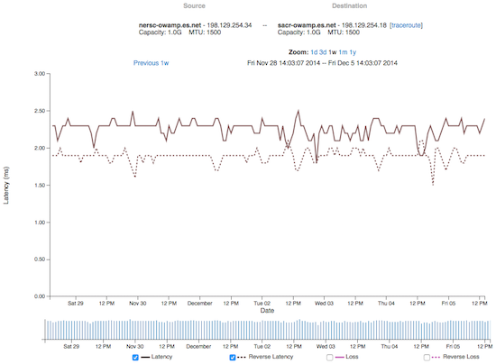
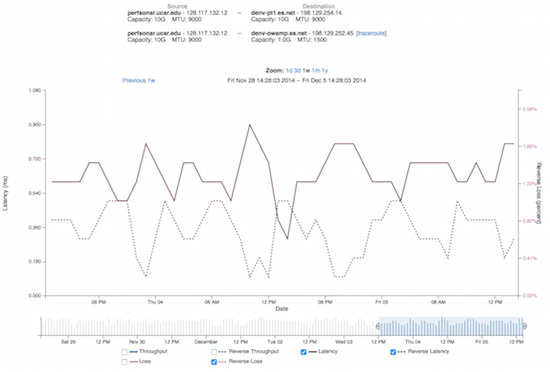
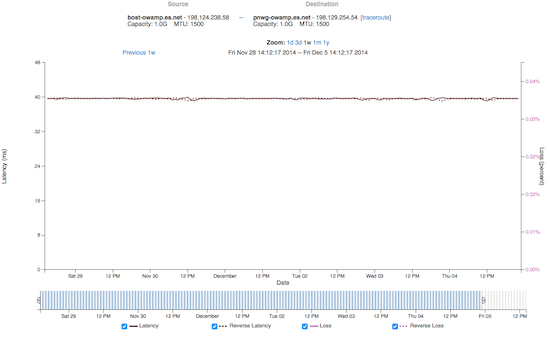

NTP Overview¶
The Network Time Protocol (NTP) is a method to synchronize clocks to UTC (timezones are set locally by the administrator). The general goal of this software is to ensure that time is monotonically increasing, e.g. NTP will not skip a clock backwards in time and only makes adjustments that slow or speed up the local clock to move it towards the true definition of time. NTP will minimize offset (the difference from true time) and skew (difference of time change rate from the true rate), as it operates on a host.
NTP is required to be running on perfSONAR servers that are performing OWAMP measurements. OWAMP is designed to make API calls to a running NTP daemon to determine the time and relative errors for hosts involved in a measurement. As an example, OWAMP works by sending streams of small UDP packets. Each is timestamped on one end, and then compared on the other end upon receipt. These accurate timestamps are used to calculate latency and jitter on a more fine level than is possible via other methods (ICMP packets used in Ping). It is possible to operate the perfSONAR tools without a running NTP daemon (e.g. by using certain switches in the tools to disable the check of time), however the resulting measurements of network performance will be skewed due to the lack of accurate timekeeping.
If NTP is being configured manually (e.g. editing /etc/ntp.conf), there are several key points to be aware of to ensure that time is as accurate as possible on the host:
A directly attached clock (CDMA, GPS, etc.) is not required to use perfSONAR. These external devices can certainly help to keep time accurate (in some cases to differences of less than 1 millisecond), but do add expense and maintenance to the operation of the measurement machine. External clocks can cost several hundred dollars, and do require access to cellular networks (in the case of CDMA devices) or a clear view of the sky via an external antenna (in the case of a GPS).
Using the NTP daemon to synchronize against a grouping of well known clock servers (many of which are operating with a directly attached clock) is sufficient for the measurement needs of perfSONAR.
Selecting 4-5 servers is a good way to ensure there are backups available in the event of a failure. These servers should be:
Not from the NTP pool. The default configuration for NTP is to use regional pool servers (e.g. some located in North America, or Europe, etc.). Pool servers work well if there is not a critical need for time accuracy in the range of a few milliseconds. For measurement needs, accessing time consistently, from well known and trusted servers, is a requirement.
Located topologically close to the server. In general they should be no more than 20ms away. Selecting a server that is far away makes the time subject to the increased latency, adding to a higher possible error.
Located on divergent network paths. The reasoning for this requirement is to prevent a catastrophic network failure from impacting all time servers that are synchronized against. For example, if 4 servers are selected, all located and operated by a peer network, and this peer suffered a network outage, time updates may not be available.
Of the same ‘stratum’. Stratum is defined to be the distance away from a true time source. For example, if a host has a CDMA clock attached to it, it is a stratum 1 server (the CDMA itself is stratum 0). Setting server choices to be all of the same stratum will aide the NTP algorithm selection process. In general try to synchronize against clocks that are stratum 1, 2, or 3. Higher stratum servers can impart additional error into measurement calculations.
Many U.S. Laboratories, Universities, and Network Providers have public NTP servers that can be leveraged, if you cannot find a public list for a specific site, sending an email may be a good way to find out.
Secure NTP against misuse. This typically means not allowing external entities to query your NTP status by inserting rules that only allow your subnet to poll the server. This will prevent attacks like NTP amplification.
Once NTP is configured, it will take a day to fully stabilize a clock. This process happens quickly at first (e.g. sending a set of small synchronization packets every 60 seconds), and then slows down by querying on the order of minutes. Clock synchronization packets are UDP, and typically use port 123.
Viewing NTP Status¶
NTP can be queried on a machine using the following command:
[user@host ~]$ /usr/sbin/ntpq -p -c rv
remote refid st t when poll reach delay offset jitter
==============================================================================
*GPS_PALISADE(1) .CDMA. 0 l 13 16 377 0.000 0.007 0.000
+albq-owamp-v4.e 198.128.2.10 2 u 25 64 377 54.065 0.031 0.010
atla-owamp.es.n 198.124.252.126 2 u 26 64 377 13.063 0.085 0.015
+sunn-owamp.es.n 198.129.252.106 2 u 15 64 377 62.270 -0.276 0.011
aofa-owamp.es.n 198.124.252.126 2 u 19 64 377 5.216 0.103 0.043
star-owamp.es.n 198.124.252.126 2 u 42 64 377 17.447 0.945 0.054
associd=0 status=0415 leap_none, sync_uhf_radio, 1 event, clock_sync,
version="ntpd 4.2.6p5@1.2349-o Sat Nov 23 18:21:48 UTC 2013 (1)",
processor="x86_64", system="Linux/2.6.32-504.1.3.el6.x86_64", leap=00,
stratum=1, precision=-22, rootdelay=0.000, rootdisp=0.469, refid=CDMA,
reftime=d82c943a.40804c37 Fri, Dec 5 2014 12:29:46.251,
clock=d82c9448.0851cd31 Fri, Dec 5 2014 12:30:00.032, peer=22846, tc=5,
mintc=3, offset=0.001, frequency=-56.648, sys_jitter=0.042,
clk_jitter=0.000, clk_wander=0.000
Additional statistics can be found using this command:
[user@host ~]$ ntpstat
synchronised to NTP server (198.124.252.126) at stratum 2
time correct to within 38 ms
polling server every 1024 s
Latency Test Observations on Well-Tuned Machines¶
Even on well tuned servers, time abnormalities can be witnessed due to the sensitivity of tools like OWAMP. NTP works hard to get your host to within a couple of milliseconds of true time. When measuring latency between hosts that are very topologically close (e.g. LAN distances up to 5 milliseconds), it is quiet possible that NTP drift will be observed over time. The following figure shows that calculated latency can drift on the order of 1/2 a millisecond frequently as the system clocks are updated by NTP in the background.
The next figure shows a closer view of this behavior. Clocks will drift slowly between the intervals that NTP adjusts them, particularly if NTP has stabilized and is running every couple of minutes instead of a more frequent pace.
Hosts that are further away will not see this behavior, as the difference of a fractional millisecond is less important when the latency is 10s or 100s of milliseconds.
Statement on Precision Time Protocol (PTP)¶
There have been reports that perfSONAR produces inaccurate or impossible (negative) results when testing transit time on networks whose latency is in the sub-millisecond range, i.e., less than the clock accuracy provided by the Network Time Protocol served by hosts on the Internet. This is expected, although not necessarily desirable, behavior. It has further been suggested that perfSONAR should integrate support for the IEEE 1588 Precision Time Protocol (PTP), which can discipline a computer’s clock to within tens of microseconds, eliminating this problem.
The perfSONAR development team’s goal is to provide the most accurate measurements in as many situations as possible. When we last reviewed the potential to add PTP support to perfSONAR in 2015, there were two factors that led us to deduce that it was not timely. First, the primary mission of perfSONAR is identifying network problems along paths between domains, and thus for most cases the latency will be large enough that NTP’s millisecond accuracy is sufficient. But more importantly, second, both the level of support in network hardware, and its cost, was prohibitive at that time.
While it is possible for installations requiring better accuracy to install local stratum-1 NTP servers, some of which can be had for under US$500 and have been known to discipline clients’ clocks to well under a quarter millisecond, there are now reasons why the perfSONAR project is revisiting PTP.
First, a growing number of National Research and Education Networks (NRENs) are deploying or beginning to deploy PTP, or services like White Rabbit that use PTP, in their production networks. While their primary use cases may be in other areas, e.g., to provide resilience via a national metrology institute to GPS-based time sources, or to enhance security-related applications like SIEM, once a more accurate time source is available its application to one way delay measurement in principle becomes possible. The NRENs may also then extend their PTP-based time service to their member organisations. Second, the availablility of hardware - network devices and NICs - with PTP support is now much wider, and its cost no longer a blocking factor. Third, there is now an extension to the OWAMP protocol used by perfSONAR to support the PTP timestamp format (RFC 8186). And last but not least, there are now more users expressing an interest in deploying perfSONAR to measure network characteristics in campus networks and data centres scenarios where the one way delay will be significantly under 1ms.
At the team’s meeting in Amsterdam in August 2023, these factors were discussed and it was agreed that the team would explore the pieces required to introduce PTP support to perfSONAR, whether through changes to the existing owping tool, or perhaps by authoring a new test tool. It would seek practical experience in hwardware timestamping. And the team will also look to evaluate the observed timing accuracy for perfSONAR nodes that are synchronised through PTP (independently of any future test type that uses PTP timestamping).
Note that at this stage there is no commitment or timeline for PTP support, but it is clear its importance has grown since the last version of this statement produced in 2015.
As ever, the team welcomes user feedback, and uses it to measure demand for new features and how much priority they should be given. If a large enough contingent of users is deploying PTP in their networks and believes the additional accuracy would be useful, its priority is likely to be raised for a future release, if the evaluation proves support can be implemented in practice.